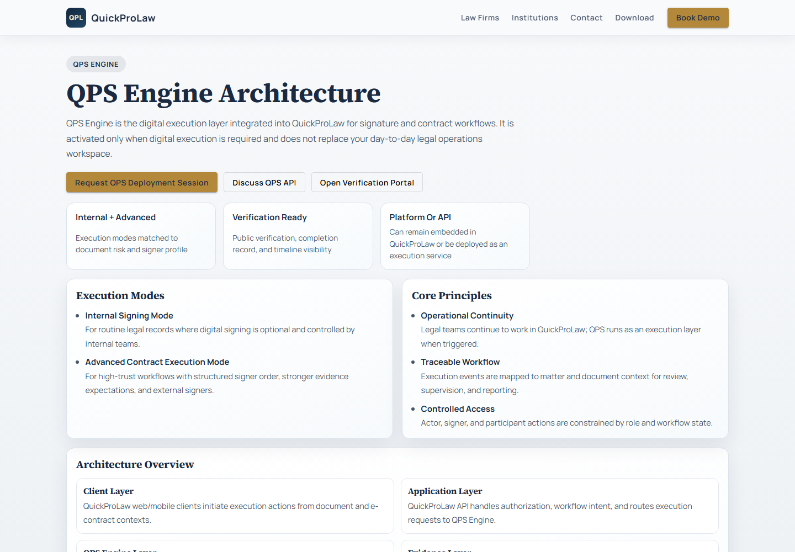
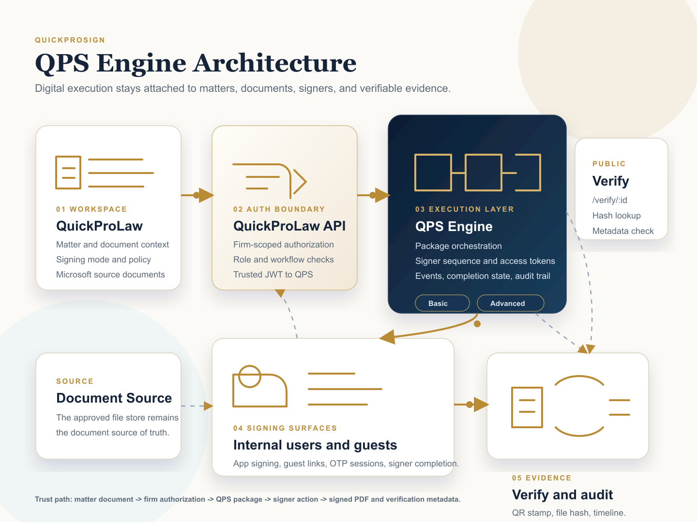

What it is
QPL Sign supports document signing, contract package setup, signer links, verification, and execution records. The product has both a basic signing mode and a more advanced contract-lifecycle direction.
Product record
A signing and contract-execution layer connected to QuickProLaw, with a path toward a standalone signing API for trusted third-party systems.
Product views
QPL Sign started as a legal-product integration, but the work points toward a signing service with clean boundaries and trusted handoff.


QPL Sign supports document signing, contract package setup, signer links, verification, and execution records. The product has both a basic signing mode and a more advanced contract-lifecycle direction.
The service uses Node and Express, Firestore-backed basic signing, Postgres/Supabase backed advanced flows, JWT-style trusted-client configuration, webhook delivery code, Docker, and Cloud Run deployment paths.
Signing is sensitive because the user journey is simple but the system responsibilities are not. I treated token expiry, signer order, audit events, verification, and failure states as product features, not backend afterthoughts.